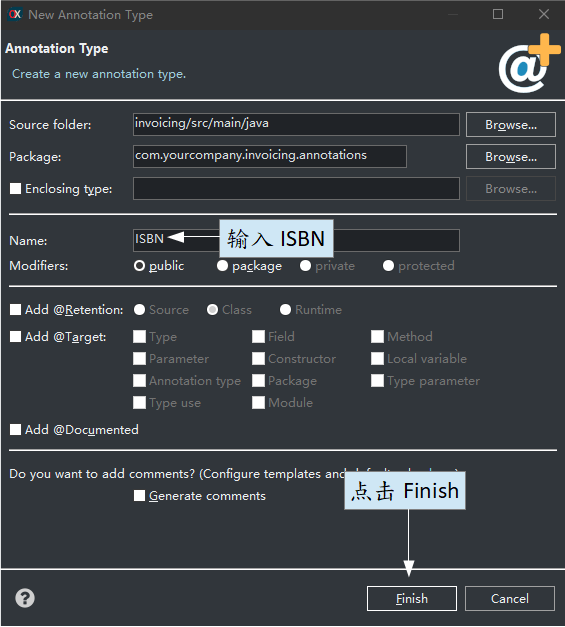

@ISBN // 此注解表示该属性必须作为 ISBN 进行验证
String isbn;
@Column(length=13)
String isbn;

package com.yourcompany.invoicing.annotations; // 在注解包
import java.lang.annotation.*;
import javax.validation.*;
@Constraint(validatedBy = com.yourcompany.invoicing.validators.ISBNValidator.class)
@Target({ElementType.FIELD, ElementType.METHOD})
@Retention(RetentionPolicy.RUNTIME)
public @interface ISBN { // 一个常规 Java 注解的定义
Class<?>[] groups() default{};
Class<? extends Payload>[] payload() default{};
String message() default "isbn_invalid"; // i18n 文件消息的 id
}
isbn_invalid=ISBN 无效或不存在
package com.yourcompany.invoicing.validators; // 在验证器包中
import javax.validation.*;
import com.yourcompany.invoicing.annotations.*;
import org.openxava.util.*;
public class ISBNValidator implements ConstraintValidator<ISBN, Object> { // 必须实现 ConstraintValidator
private static org.apache.commons.validator.routines.ISBNValidator
validator = // 来自Commons Validator 框架
new org.apache.commons.validator.routines.ISBNValidator();
public void initialize(ISBN isbn) {
}
// 包含验证逻辑
public boolean isValid(Object value, ConstraintValidatorContext context) {
if (Is.empty(value)) return true;
return validator.isValid(value.toString()); // 使用“Commons Validator”
}
}
@Column(length=13) @ISBN
String isbn;